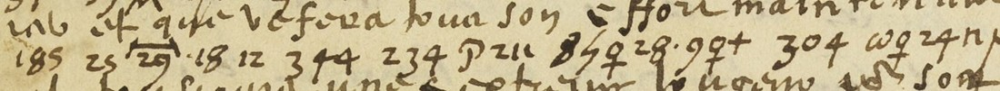
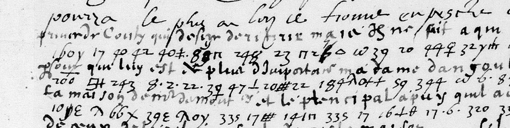

At a glanceExternal key matched · partial (96% of the cipher)
- The letters
- Honoré Mauroy La Verrière (catalogued as Laurière) to Louis de Gonzague, duc de Nevers: Châlons, 9 July 1593; Courgenay, 13 July 1593; Poissy, 12 August 1593.
- Where
- BnF français 3625 no. 55 (f. 66r) and no. 10 (f. 10r); français 3985 f. 58. Catalogue item 30, with the Champagne news-letters of 1590–91.
- The cipher
- Tomokiyo’s Nevers key no. 57 (fr. 3995 ff. 102–103), endorsed “Monsr de La Verriere”: two signs per letter, syllables, doubles, words in alphabetical order, places and name signs.
- How it was deciphered
- setsunaatto identified the key sheet as the writer’s and deciphered no. 55 with it; a blind test on no. 10 reproduces the office’s interlinear decipherment; f. 58 was then deciphered here with the key and checked against its interlinear.
- What it says
- Nevers must be with the King so that his assembly is not put off; Lorraine will treat only once the King is Catholic; the prince de Conty, the Montmorency house, La Trémoille, and papal letters against the Cardinal de Bourbon.
- Still open
- 13 tokens of f. 58: six illegible on the microfilm, seven with certain values that give no sense.
These letters were filed with the Champagne news-letters of 1590–91 to Nevers, which use other ciphers and have their own pages: the two-digit alphabet of June 1590 and Bienvenut’s name code.
02 Laurière, Châlons, 9 July 1593 (fr. 3625 no. 55)

The OAI item list of fr. 3625 places no. 55 at f. 66r (canvas 143): Laurière’s letter, “Chalons ce IX juillet 1593”, clear French with eight cipher runs (86 groups) in a mixed code of figures, letters and signs. The first pass (21 September) aligned the interlinear decipherment of his 13 July letter (no. 10, f. 10r) into a twelve-entry table and decoded 19 groups in fragments. That table turned out to be one group out of step: ✗ is le Roy, not que; 335 is soit; 141 is catholique; “101 54y+” is au-ro-i-t, not Sa Majesté.
The key (29 September 2026). setsunaatto (GitHub issue 13) identified the writer’s own key sheet: Tomokiyo’s Nevers key no. 57, BnF fr. 3995 ff. 102–103, endorsed “Monsr de La Verriere”, “Chartres 1593 fevrier” (Honoré Mauroy La Verrière, whom the catalogue calls Laurière). Each letter has two signs; the figures 1–72 are syllables, row + 14 × vowel (the sheet heads its grid “ba 1, be 15, bi 29, bo 43, bu 57”); 73–98 are double letters (92 = pr); 99–353 are words in alphabetical order (184 est, 285 necessaire, 347 vous); overbarred figures are provinces and towns; special signs stand for the Pope, the King, Lorraine, Gondi and the Grand Duke of Tuscany. Every entry used below was checked here on the sheet, and lines 1–2 of the issue’s transcription against the page and against the first pass’s transcription, group for group. The issue also tested the key blind on no. 10: 80% of the office’s glossed letters fall in matching runs of four or more, against a shuffle maximum of 30% (section 03).
| Run | Deciphered |
|---|---|
| 1, after “pour vous faire resouvenir” | vous estes necessaire pres du Roy afin qu’il ne retarde d’ung jour son assemblée, ce que ses ennemys luy donne[r]ont tout l’empeschemen[t] qu’ilz pourront pour luy faire prandre autre dessein |
| 2, after “Revenant a mon voiage” | [le duc de Lorraine] montre desir de traiter, mais necessaire avant que [le Roy] soit catholique |
| 2b, before “ce moquans de cela” | quoy fait une election |
| 3, after “francoir” | s’il veult atandre la volonté du [Pape], non aussitost qu’il sera catholique, qui la traitera |
| 3b, after “et en donne sa parolle” | [le Cardinal de Gondy] pour [le grand duc de Toscane] |
The bracketed letters are missing in the cipher itself. The letter was written sixteen days before Henri IV’s abjuration at Saint-Denis: Laurière presses Nevers to be at the King’s side so that the assembly is not put off, reports that Lorraine will treat only once the King is Catholic, and that the Leaguers mock the idea of an election. He also asks whether the Pope’s consent is to be awaited.
03 Laurière, Courgenay, 13 July 1593 (fr. 3625 no. 10): the key against the office’s decipherment

No. 10, Laurière’s letter of four days later, has the office’s decipherment written between the lines, and it was not used to fit key no. 57. (Issue 13 used one of its runs to check which y-shaped sign is e and which is i; with the two swapped, the blind score below falls only from 157 to 152.) setsunaatto (pull request 15, 30 September 2026) transcribed five of its runs from crops that hide the glosses, fixed that transcription, and only then read the glosses. The other eight glossed runs were transcribed with the glosses in view. The score counts the gloss letters that fall in runs of four or more that the key reproduces; the control shuffles the signs of each run, 2000 times.
| Runs | Gloss letters in matching runs of four or more | Shuffled control |
|---|---|---|
| 5 runs transcribed blind | 157 of 196 (80%) | 33.8 ± 6.3, at most 58 |
| the same, without the run first seen with its gloss | 121 of 160 (76%) | 21.8 ± 5.0, at most 42 |
| 8 runs transcribed with the glosses in view | 311 of 354 (88%) | 97.7 ± 10.6, at most 129 |
Checked here before merging: the script reproduces these figures, and the first pass’s own transcription of three of the blind runs (21 September, before the key was known) agrees with the blind one on every figure group but one. Of the 21 word numbers the contributor added from the sheet, 18 were found on f. 103r exactly as given (100 aux, 122 bien, 150 congnoystre, 234 hault, 303 pouvoir, 307 quant and the rest); the other three were not viewed. The sheet’s alphabet rows also showed that our key file had c and h the wrong way round (μ stands under C, the c-shaped sign under H), as the contributor had pointed out. That is corrected.
Apart from spelling and gaps in the gloss, key and office disagree in one run. Over “25 29”, where the 29 carries a bar with turned-down ends (the mark of a province number: 29 is “L’Espaigne ou Espagnols” on the sheet), the office wrote qui ne se; the key gives que [l’Espagne]. Over “344 234” it wrote pour son. The figures are clear on the page and the sheet makes them tout hault, but the phrase is faire tout son effort, so Laurière probably meant 334 (son) and wrote 234. Among the other runs:
- ne pouvoir recongnoistre le Roy que premieremen ilz n’eusse eu la volonté du Pape, qui ne viendront jamais a c’est … que par force
- et que [l’Espagne] fera tout hault [son?] effort maintenant pour anpescher que le Pape ne le resoive, qui seroit tousjours une extreme longueur pour sortir du mal
- que nous tenons que [le marquis de Pont] suivra le duc de Lorraine (the marquis’s sign is close to the key’s, not identical: grade M)
- a l’assemblée ou elle sera tres necessaire
One run has no gloss at all. After “que nous avions despesché” it reads: [le grand duc de Toscane] quant [le Roy] nous bailla par escrit (sa?) volonté. The barred 3 before volonté is not on the sheet, and sa is a guess from context.
04 La Verrière, Poissy, 12 August 1593 (fr. 3985 f. 58)
Tomokiyo’s entry for key no. 57 says it is used in “a letter from Laveriere to the Duke of Nevers, Poissy, 12 August 1593 (BnF fr.3985 fol.58)”. That letter is f. 58r, canvas 114 of Gallica btv1b90606498 (the verso, canvas 115, is the address only: “Monseigneur le duc de Nivernois”), signed “Laverriere”, “A Poissy ce xij aoust 1593”. It is clear French with two cipher passages, run A in nine lines in the middle of the page and run B in brief pieces in lines 21–24, and the office’s decipherment is written over almost every cipher line in a lighter ink: the letter was deciphered at the time. To read it, the whole word list of the key sheet (words 99–353 and the province and town numbers) was transcribed from fr. 3995 f. 103r on 2 October 2026.

Key no. 57 as it stands on the sheet reads 235 of the 248 cipher tokens (94.8%) as sense (fr3985_f58/decode58.py; Laverrière’s own clear words inside the runs are not counted): run A 219 of 223 (98.2%), run B 16 of 25. The first pass of 2 October gave 222 (89.5%). For the second, on 3 October, the cipher block was fetched again as lossless image regions at Gallica’s maximum (the microfilm has no larger image) and read with contrast enhancement, and the name panel of the key, f. 103v, was examined at full resolution. The fr-1600-letters model gives −1.66 per character on run A, with French first among the languages. The last group of run A is the phrase Tomokiyo names as the one that let him identify the key, 17 9 70 26 17 32 ω q n s = de nature defians, and its first figure is his 304 = pour.
[… ce qui l’empesche c’est] pour le fait du [prince de Conty], qui desire de ritirer, mais il ne sait a qui le confier, estant la personne qui luy est de plus d’importance. Madame d’Angoulesme est port[ée] du tout a la maison de [M. de Montmorency], et le principall appuy qu’il ait, soit des catholiques, soit de ceux de la religion, soit de ceste maison, qui s’acorderoit fort bien pour cela, s’il y avoit quelque remuement. Vola pourquoy il desire faire election d’ung fidelle serviteur et tabour le [lieu?], ou il le pourra mettre, et point, l’oter, instruire, gagner monsieur de la Trimouille, pour ne donner aucung soubs son[…] a ceux de la religion, estans tous de nature defians.
… ny eust grand propos, et a [Espagnols] [?] [Pape] ce tiennent le plus empeschés [6 lam 340] … dict qu’il y a lettre[s] [du] [Pape] pour atanter a la personne du [Cardinal de Bourbon], et disent avoir les lettres …
Bold is cipher; the rest is clear. A fortnight after Henri IV’s abjuration, during the truce talks, La Verrière tells Nevers, who was preparing his embassy to Rome, that the young prince de Conty wants to withdraw someone but has no one to entrust it to; that Madame d’Angoulême (Diane de France) is wholly inclined to the house of M. de Montmorency, his main support among Catholics and Protestants alike; and that he therefore wants to choose a faithful servant and to win over La Trémoille, the Huguenot leader. Run B reports that there are letters of the Pope for an attempt on the person of the Cardinal de Bourbon.
Key, slips and gloss. New word values used here include 160 desire, 183 estre, overbarred 200 plus, 243 importance, 245 instruire, 300 personne, 309 quoy, 327 serviteur, 340 tabour and 344 tout. 183 estre followed by n t stands for estant (grade I). The four name signs were first taken from the gloss; on 3 October all four were found on the key’s name panel, f. 103v, read at full resolution, and are now grade H: prince de Conty (an R crossed with an X), M. de Montmorency (singular on the panel), Cardinal de Bourbon (a hooked cross), and the duc de Lorraine at the end of B4. The writer’s caret (p) is a tall λ like his a; with that, the word after est reads port[ée] (I), where the office wrote “a m…”. In run B the barred 29 is the province sign for the Spaniards and 252 is lettre (I). Six slips of the writer are forced by the context and agree with the gloss (madame, princi-, soit, fidelle, vola, avoit). Key and office differ in three places: the figures give a ceux where the office wrote a cause, and spell e-le-o-c-ti-o-n and ga-g-ne-t where it wrote election and gagner.
05 What stays open
- In no. 10: the barred 3 of the unglossed run, and the marquis de Pont’s sign (grade M).
- Fr. 3985 f. 58, 13 of 248 tokens (94.8% read, one token short of the project’s 95% bar). Six are illegible at Gallica’s maximum resolution, even as lossless enhanced crops: two signs in sait (a blot and a 2-shaped sign), the three middle signs of ceste, and the sign after the barred 29 in B1; no colour scan is online. Seven have certain values on the key sheet that give no sense: 340 tabour in “faire election d’ung fidelle serviteur et [340] le lieu ou il le pourra mettre” (Cotgrave 1611 and Nicot 1606 give tabourer only as to drum or to rap at a door; 348 voir, one digit away, would fit, but the office also read tabour, so it stays a conjecture, not counted), B2
6 lam 340(gloss “la plus…”), and B428 25 202before the duke of Lorraine. A printed text of the letter in the Mémoires de Nevers could not be checked; the volume is not online. - No. 55: 85 of 86 groups; the one left is “9P”, a clear abbreviation. Counted over nos. 55 and f. 58: 320 of 334 tokens (95.8%); no. 10 is scored against its gloss and not counted. Measured on the words of the readings: no. 55 93.3% and no. 10 90.4%, coherent sentences under the 95% bar; f. 58 95.7%.
Full texts
The transcription and the decryption of every document on this page, so that the reading can be used and checked. Short files are shown here; all are in the repository.
fr. 3625 no. 55, f. 66r, Châlons, 9 July 1593 read in part
In the weeks before Henri IV's abjuration (25 July 1593), Laurière urges Nevers to go to the King so that he does not put off his assembly by a day, since his enemies will do all they can to turn him from it; he reports that Lorraine will treat only once the King is Catholic, that the Leaguers joke about an election, and asks whether the Pope's consent is to be awaited.
Builds coherent sentences, but under the read bar of 95% of words read as sense (93% here); the holes are marked in the reading.
Transcription
# fr. 3625 no. 55, f. 66r (canvas 143), Laurière to Nevers, Châlons, 9 July 1593. Groups as read from the full-resolution page. # Letters/signs attached to figures are kept as written (P, n, q, y, #, ‡, ⊥, Δ, ω, ✗, ⱨ, E, β, μ). # line 1 (after "pour vous faire resouvenir"; "come" written over 347): 347 184Pn 285 927# 59 ✗ ω32q 25 248 23 26 14‡ 17 59qP 49⊥ⱨ 334 107 16 # line 2: 25 27n 181# 262 150f0‡+ 344 6q 24n μ c y 8q 39E7 52⊥54qΔ 304 262 197 92ωqn 26 # line 3 (before "dont monseigneur"): 101Δ26 167 # line 4 (after "Ivenant a mon voiage"): ⱨ⊥- 50qΔ26 160 17 # line 5 (to "ce moquans"; "encores" in clear): Δ12h28# 8yn 285 ω 15q+ 25 ✗ 335 141 encores 312 203 ⊥23 Pro μ 92 f q # line 6 (after "chatouiller les oreilles"): 304 91P # line 7 (after "francoir"): 41E 345 Δ14‡ 26.6. 346. 59 XX 286 103 56nΔ 39β 27 12 141 ‡39β +12 42 8‡ω # line 8 (after "et en donne sa parolle"; "n" written over 304): 304 ✗
Decryption
# fr. 3625 no. 55, f. 66r (Gallica btv1b52511322v canvas 143), Lauriere (La Verriere) to Nevers, Chalons, 9 July 1593. # Read with Nevers key no. 57 (key57.txt). Transcription and reading contributed by setsunaatto in # dbourdeau/cyphersolver issue 13 (29 Sept 2026); lines 1-2 re-checked here against the full-resolution page and against # our own independent transcription (ct_3625_55.txt): the figures agree group for group; the sign names differ only in # naming (our "184Pn" = their "184 Ep pi"; our "ω32q" = "om 32 venus"). # Sign names: om/lam = a, Ep/ye = e, yi = i, venus/onplus = n, ddag/mcross = r, hash/pi = s, tri/plus = t, perp/v = u, # f = o, Gs = g, Dh/Dgrid = d, eps = l, 15_ = overbarred 15. # # Run 1 (after "pour vous faire resouvenir", "come" written over 347) # 347 184 Ep pi 285 92 ye hash 59 ROY om 32 venus 25 248 23 26 14 ddag 17 59 venus Gs 49 perp mcross 334 107 16 # 25 27 pi 181 hash 262 159 f onplus plus 344 6 venus 24 pi mu c ye 8 venus 39 eps eng 52 perp 54 venus tri 304 262 # 197 92 om venus Dh 26 101 tri 26 167 # = vous estes necessaire pres du Roy afin qu'il ne retarde d'ung jour son assemblee, ce que ses ennemys luy # donne[r]ont tout l'anpescheman[t] qu'ilz pourront pour luy faire prandre autre dessein # Run 2 (after "Revenant a mon voiage") # LORRAINE 50 venus tri 26 160 17 tri 12 zig 28 ddag 8 yi pi 285 om 15_ venus plus 25 ROY 335 141 # = [le duc de Lorraine] montre desir de traiter, mais necessaire avant que [le Roy] soit catholique # Run 2b (before "ce moquans de cela") # 312 203 perp 23 Ep 20 mu 42 f venus = quoy fait une election # Run 3 (after "francoir") # 41 eps 345 lam 14 venus Dgrid 26 6 346 59 PAPE 286 103 56 pi tri 39 beta 27 12 141 39 6 plus 12 zig 28 ddag om # = s'il veult atandre la volonte du [Pape], non aussitost qu'il sera catholique, qui la traitera # Run 3b (after "et en donne sa parolle", "n" over 304) # GONDY 304 TOSCANE = [le Cardinal de Gondy] pour [le grand duc de Toscane] # # Two letters are missing in the cipher itself (r in donne[r]ont, t in empescheman[t]). # Differences from ct_3625_55.txt: (a) "304 91P" after "les oreilles": 304 = pour; 9P not on the key, a clear abbreviation; # (b) run 3b: three signs (Gondi sign, 304, Tuscany sign) against our "304 ✗".
Reading
# fr. 3625 no. 55, f. 66r — Laurière (La Verrière) to the Duke of Nevers, Châlons, 9 July 1593: the cipher runs Written 23 Oct 2026 (Claude Opus 5.5, verification 4) from `../reading_3625_55.txt` (setsunaatto's transcription and decipherment with Nevers key no. 57, issue 13, 29 Sept 2026; lines 1-2 checked group for group against our own `../ct_3625_55.txt`) and the table in NOTES.md. The letter is in clear French with eight cipher runs; the clear text is not transcribed in full, so each run is given with the clear words that lead into it (from the transcription's run headings and NOTES), in roman, and the deciphered run follows. Spelling is the key's letters (*atandre*, *prandre*, *anpescheman*); name signs are written out (the crossed X = le Roy, XX = le Pape, the Lorraine, Gondi and Tuscany signs). "come" over 347 is the gloss on the leaf. Marks: `[x]` a letter missing in the cipher itself, `[…]` clear text not transcribed. ## Reading […] pour vous faire resouvenir come vous estes necessaire pres du Roy, afin qu'il ne retarde d'ung jour son assemblee, ce que ses ennemys luy donne[r]ont tout l'anpescheman[t] qu'ilz pourront pour luy faire prandre autre dessein. Revenant a mon voiage, le duc de Lorraine montre desir de traiter, mais necessaire avant que le Roy soit catholique. […] quoy fait une election […] ce moquans de cela. […] s'il veult atandre la volonte du Pape, non aussitost qu'il sera catholique, qui la traitera. […] et en donne sa parolle le cardinal de Gondy pour le grand duc de Toscane. ## Notes - The missing *r* and *t* are missing in the figures, not unread. - "304 9P" after "les oreilles" is *pour* plus a clear abbreviation (9P is not on the key): the one group of 86 not given a value.
Translation
# fr. 3625 no. 55, Laurière to Nevers, Châlons, 9 July 1593: the cipher runs in English Translation of `n55_reading.md` (23 Oct 2026), same holes. ## Translation […] to remind you how necessary you are near the King, so that he does not put off his assembly by a single day, which his enemies will hinder in every way they can, to make him take another course. Returning to my journey: the Duke of Lorraine shows a wish to treat, but [thinks it] necessary [first] that the King be Catholic. […] what an election does […] mocking at that. […] whether he means to wait for the Pope's will, not [treat] as soon as he is Catholic, who will treat it. […] and the Cardinal de Gondi gives his word for it on behalf of the Grand Duke of Tuscany.
fr. 3625 no. 10, f. 10r, Courgenay, 13 July 1593 read in part
Laurière to Nevers four days later: they cannot recognise the King until they have the Pope's will, Spain will make every effort to stop the Pope from receiving him, the Marquis de Pont will follow the duc de Lorraine, and Nevers's presence at the assembly is very necessary. The cipher runs reproduce the office's interlinear decipherment; one unglossed run concerns the Grand Duke of Tuscany.
Builds coherent sentences, but under the read bar of 95% of words read as sense (90% here); the holes are marked in the reading.
Transcription
# fr. 3625 no. 10, f. 10r (Gallica btv1b52511322v canvas 31), Laurière (La Verrière) to Nevers, Courgenay, 13 July 1593. # BLIND transcription of five cipher runs, used to test key no. 57 (key57.txt) on a letter that played no part in # fitting it. Contributed by setsunaatto (issue 13). # # How it was made: only the cipher lines were cropped, at a height that leaves the interlinear decipherment off the # image, and transcribed from the sign shapes alone. The L lines were committed (setsunaatto's private repository, # 29 Sept 2026 16:58 JST) before the glosses were read; the G lines were added in a later commit (17:01 JST). The # L lines have not changed since. "?" marks a sign whose shape could not be decided; the checker treats it as unknown. # # Sign names as in reading_3625_55.txt: om/lam = a, Ep/ye = e, yi/zig = i, venus/onplus = n, ddag/mcross = r, # hash/pi = s, tri/plus = t, perp/Vs = u, f/sigma = o, Gs/varpi = g, Dh/Dgrid = d, eps/beta = l, mu = c, # 15_ = overbarred 15 (va); ROY = crossed X (le Roy), PAPE = XX (le Pape). # # Run L1 is the phrase used as the positive example when the key was first applied (its gloss had been read), so the # checker also reports the result without it. L1 20 197 tri 12 yi 28 ddag 99 15_ venus plus 25 ROY 335 141 288 L2 ? 57 venus pi 92 ? hash 10 54 20 17 262 25 103 56 pi tri 25 13 ? 101 54 yi plus 184 ye om 6 22 pi 27 39 eps tri ddag om zig 28 mcross ? yi plus L3 26 beta om 346 59 PAPE L4 69 6 26 pi 52 venus 16 25 16 perp ? 17 6 34 61 ye om 57 zig L5 venus tri ? 203 100 51 hash tri 26 pi ? eps om 44 venus 18 12 venus 16 17 # Interlinear decipherment written over each run, in the office's spelling, spaces removed, illegible letters left out. G1 lefairetraiteravantqueleroysoitcatho G2 nousavonsprinsparoledeluyquaussitostquesamatauroitfraalamessequiltraiteroit G3 atendrelavolontedupape G4 sularesponcequeceuxdelaliguea G5 aucunfaultavecnostresalaconferance
Transcription
# fr. 3625 no. 10, f. 10r (canvas 31): the other eight glossed cipher runs, transcribed 30 Sept 2026 by setsunaatto. # NOT BLIND: these were transcribed from crops that show the interlinear decipherment, so they are weaker evidence # than ct_3625_10_blind.txt. They are here to check that the key's values (especially the word numbers, which were # read from the key sheet f. 103r and not from the glosses) never contradict the office's reading. # Sign names as in ct_3625_10_blind.txt; P29 = 29 under a bracket-shaped bar (see below); MPONT = the Marquis de Pont # sign. R lines are the cipher, G lines the gloss as written over it (spaces mark a gap where the gloss is illegible). # # Readings (key57.txt, no fitting). Grades as in README Conventions: all H except where marked # (202 prendre, 320 sans: C; the MPONT sign: M). # R1 ne pouvoir recongnoistre le Roy que premieremen ilz n'eusse eu la # R2 volonté du Pape qui ne viendront jamais a c'est e re mo que par force # R3 et que [l'Espagne] fera tout hault effort maintenant pour anpescher que [le Pape] ne le resoive qui seroit tous- # R4 -jours une extreme longueur pour sortir du mal. [le Roy] c'est an fait # R5 catholique sans atandre autre chose le recognoitront des ti les # R6 y pourront prendre exanple et les emeu aussi que nous tenons que [le marquis de Pont] suivra le duc de Lorraine # R7 a l'assemblée ou elle sera tres necessaire # R8 qu'il n'i aye des gens a res du Roy qui ne soient bien a ses # # Where the key and the office disagree: # - R3 "25 P29": 29 carries a bar whose ends turn down like a bracket, not the flat overbar of the v/z syllables, and # reads as province/country 29 = "L'Espagne ou Espagnols" (f. 103r, right-hand table). The office wrote # "qui ne se" here. # - R3 "344 234": clear figures at 3.5x; 344 = tout, 234 = hault on the key sheet (H column). The office wrote # "pour son". We take both as the office's paraphrase. # - R2 "184 Ep 26 50": the image-processed crop shows 26 (not 20); the gloss is "a c·e·s·t·e re mo", which agrees. # Judgement calls: # - R6 MPONT (grade M): an R-like sign, not identical to any name sign on the key. It has the same three strokes as the key's # "Le Marquis de Pont" sign (rising diagonal, loop at top right, tail to lower right; the key's form is rounder). # Du Plessis-Mornay's sign has a top bar and a separate upright, which this lacks. Context: "... suivra le duc de # Lorraine" (the marquis is the duke's son). The gloss above has "Mr le ..." with the name illegible. # - R4 "255": the figures are over-inked (rewritten); image processing at 6x shows 2, 5 and a thin 5. 255 = longueur. # - Key-sheet duplicates: 202 and 203 appear both in the F column (font, fait) and in a P block renumbered from 200 # (prendre, permettre); 320 appears in the R column (religion) and the S column (sans). For 202 and 320 we follow # the office's choice (prendre, sans). This is the only place where the glosses decided a value. R1 23 303 26 150 ROY 25 92 ye 36 Ep 26 8 venus 248 23 perp pi 27 187 6 G1 nepouvoirrecognoistreleroypremieremeussenla R2 346 59 PAPE 39 23 43_ ye venus Dgrid 54 onplus tri 246 om mu 184 Ep 26 50 25 305 196 G2 volontedupapequineviendroitjamaisacesteremoquiparforce R3 185 25 P29 18 12 344 234 Ep 211 8 zig venus 28 9 venus plus 304 om venus 24 pi mu Hq ye ddag 25 PAPE venus ye eps Ep 26 55 zig 29_ 39 27 54 zig tri 56 perp pi G3 etquinesefera poursoneffortmaintenantpouranpescherlepapenelere quiseroittous R4 49 Vs ddag hash perp venus ye Ep theta plus mcross ye 22 255 304 55 ddag 42 mcross 59 279 ROY mu ye pi plus om venus 203 G4 jours une poursortirdumal leroycestanfait R5 141 320 om plus lam venus Dh ddag ye 101 tri 26 154 eps ye 26 44 venus varpi venus sigma zig tri 54 venus plus 17 pi 43 20 hash G5 catoliquesansatendreautrechosederecongnoistre R6 o 52 perp 54 onplus tri 202 ye inf om venus 93 Ep 185 beta ye hash 190 103 25 288 28 51 venus pi 25 MPONT 69 zig perp 12 LORRAINE G6 deypourront exempleetles aussi suivraleducdelorraine R7 om beta 107 f Vs Ep eps 20 27 12 tri ddag ye hash 285 G7 alassembleeouelleseratresnecessaire R8 39 eps 37 om X ye 17 pi 224 lam 26 pi 59 ROY 39 23 55 zig Ep venus plus 122 lam 27 hash G8 quilnyayedesgens # # The run the office left unglossed (after the clear "que nous avions despesché"), transcribed from the full-resolution # page when PR 15 was merged (30 Sept 2026). It has no G line: the checker prints its decipherment and does not score it. # 3_ is a 3 under a bar: not a syllable (the bar marks only the v and z rows), and province 3 (Bretaigne) gives no sense; # "sa" fits the context (grade I). bailla is written with one l. # Reading: [le grand duc de Toscane] quant [le Roy] nous bailla par escrit (sa?) volonté U1 TOSCANE 307 ROY 288 xi om zig eps lam 305 175 3_ 346
Transcription
# fr. 3625 no. 10, f. 10r (canvas 31), Laurière to Nevers, Courgenay, 13 July 1593: the first three cipher runs with the # office's interlinear decipherment above them (alignment by position; partial). 10 197 Δ124 28# 99 159+ 25 ✗ 335 141 288 = le Pape ... traitera avant que le Roy soit Catholique (✗ que, 335 le Roy, 141 soit, 288 Catholique) Δ57 9n 92# 10 54 20 17 262 25 103 56nΔ 25 13 ✗ 101 54y+ 184y ω.6. 22n27 39E Δ‡ω 28 ... 54y+ 3? λ14? = nous avions pris parole de luy qu'aussitost que Sa Majesté auroit esté a la messe qu'il traicteroit sans (✗ que, 101 54y+ Sa Majesté, 184y auroit) 26 βω 346 59 XX = attendre la volonté du pape (346 volonté, 59 du, XX pape) # Later runs (not transcribed): "69.6.26n52 ... 17.6.34 61y ω57hy" glossed "sur la response qu'a eue de la ligue ..." etc.
Decryption
# fr. 3625 no. 10, f. 10r, Laurière (La Verrière) to Nevers, Courgenay, 13 July 1593: cipher runs deciphered with key no. 57
Output of `python check_3625_10.py`, run 22 Oct 2026 (unchanged from 14 Oct), saved here verbatim. "key" = the
decipherment with `key57.txt` (unspaced; ? = sign not on the key); "gloss" = the office's interlinear decipherment.
L1-L5 from `ct_3625_10_blind.txt`, R1-R8 and the unglossed run U1 from `ct_3625_10_rest.txt`. Word-divided readings
of the runs are in NOTES.md (section "No. 10 deciphered with key no. 57"). The clear text of the letter is not transcribed.
```
L1 key lefairetraiteravantqueleroysoitcatholiquenous
gloss lefairetraiteravantqueleroysoitcatho
L2 key ?bunspr?sparoledeluyqueaussitostquesa?auroitestealamessequiltraiter?it
gloss nousavonsprinsparoledeluyquaussitostquesamatauroitfraalamessequiltraiteroit
L3 key relavolontedupape
gloss atendrelavolontedupape
L4 key sularesponcequeceu?delaligueabui
gloss sularesponcequeceuxdelaliguea
L5 key nt?faitauxnostres?laconferancede
gloss aucunfaultavecnostresalaconferance
R1 key nepouvoirrecongnoistreleroyquepremieremanilzneusseeula
gloss nepouvoirrecognoistreleroypremieremeussenla
R2 key volontedupapequineviendrontjamaisacesteremoqueparforce
gloss volontedupapequineviendroitjamaisacesteremoquiparforce
R3 key etquelespagneferatouthaultefortmaintenantpouranpescherquepapeneleresoivequiseroittous
gloss etquineseferapoursoneffortmaintenantpouranpescherlepapenelerequiseroittous
R4 key joursuneextremelongueurpoursortirdumalleroycestanfait
gloss joursunepoursortirdumalleroycestanfait
R5 key catholiquesansatandreautrechoselerecongnoitrontdesboles
gloss catoliquesansatendreautrechosederecongnoistre
R6 key ypourontprendreexanpleetlesemeuaussiquenoustenonsquelemarquisdepontsuiuraleducdelorraine
gloss deypourrontexempleetlesaussisuivraleducdelorraine
R7 key alassembleeouelleseratresnecessaire
gloss alassembleeouelleseratresnecessaire
R8 key quilniayedesgensaresduleroyquinesoientbienases
gloss quilnyayedesgens
U1 key legranducdetoscanequantleroynousbailaparescrit?volonte
(no gloss; not scored)
blind, 5 runs: 157 / 196 gloss letters in runs of >= 4 (80%); shuffled control 33.8 +/- 6.3 (max 58); Z = +19.4; controls >= real: 0/2000 [pass]
blind, without L1 (seen when the key was first applied): 121 / 160 gloss letters in runs of >= 4 (76%); shuffled control 21.8 +/- 5.0 (max 42); Z = +19.8; controls >= real: 0/2000 [pass]
the other 8 runs (not blind): 311 / 354 gloss letters in runs of >= 4 (88%); shuffled control 97.7 +/- 10.6 (max 129); Z = +20.1; controls >= real: 0/2000 [pass]
```Reading
# fr. 3625 no. 10, f. 10r, Laurière (La Verrière) to Nevers, Courgenay, 13 July 1593: reading of the cipher runs
The cipher runs of `texts/n10_decryption.md` (decipherment with key no. 57, unspaced there), word-divided here
23 Oct 2026 (translation wave v7) as NOTES.md divides them ("No. 10 deciphered with key no. 57"). **An excerpt**: the
clear text of the letter between the runs is not transcribed in the repository, so each run stands alone, in the
letter's order (L1-L5 on the left, R1-R8 and the unglossed U1). Letters are the key's; where a sign is not on the key
(`?` there) the word is `[?]` or a part-word hole, and where the office's interlinear gloss gives the missing word it
is shown as `[?word]`. Spelling as the key gives it (anpescher, exanple, resoive). "tout hault" stands for the figures
344 234, probably meant as "son" (NOTES).
## Reading
L1: … le faire traiter avant que le roy soit catholique. Nous
L2: [?nous avons] pr[i]s parole de luy que aussitost que sa [?Majesté] auroit esté à la messe qu'il traiter[o]it
L3: [?atend]re la volonté du pape
L4: su la responce que ceu[x] de la ligue [?]
L5: [?] fait aux nostres [?] la conferance de
R1-R5: ne pouvoir recongnoistre le roy que premiereman ilz n'eusse eu la volonté du pape, qui ne viendront jamais à
ceste [?] que par force; et que l'Espagne fera tout hault effort maintenant pour anpescher que [le] pape ne le resoive,
qui seroit tousjours une extreme longueur pour sortir du mal. Le roy c'estan fait catholique, sans atandre autre chose
le recongnoitront [?]
R6: y pouront prendre exanple, et les [?] aussi que nous tenons que le marquis de Pont suivra le duc de Lorraine
R7: à l'assemblée où elle sera tres necessaire
R8: qu'il n'i aye des gens [?] du roy qui ne soient bien [?]
U1 (no gloss): le grand duc de Toscane quant le roy nous bailla par escrit [?sa] volontéTranslation
# fr. 3625 no. 10, f. 10r, Laurière (La Verrière) to Nevers, Courgenay, 13 July 1593: the cipher runs in English Translation (Claude Opus 5.5, 23 Oct 2026) of `texts/n10_reading.md`, **an excerpt**: the cipher runs only, each standing alone, since the clear text between them is not transcribed in the repository. Same holes: `[?]` an unread sign or word, `[?word]` a word carried by the office's gloss or doubtful, `[x]` supplied letters. "with all his might" renders "tout hault effort", probably meant as "tout son effort". ## Translation L1: … to have it negotiated before the King is Catholic. We L2: [?we have] tak[e]n his word that, as soon as His [?Majesty] had been to Mass, he would negotiate L3: [?to awai]t the will of the Pope L4: on the answer that thos[e] of the League [?] L5: [?] done to ours [?] the conference of R1-R5: not to be able to recognise the King until first they had had the will of the Pope, who will never come to this [?] except by force; and that Spain will now make every effort to prevent [the] Pope from receiving him, which would always be an extreme delay in getting out of the evil. The King having become Catholic, without waiting for anything else they will recognise him [?] R6: will be able to take example from it, and the [?] also that we hold that the Marquis de Pont will follow the Duke of Lorraine R7: at the assembly, where it will be very necessary R8: that there be no people [?] of the King who are not well [?] U1 (no gloss): the Grand Duke of Tuscany when the King gave us in writing [?his] will
fr. 3985 f. 58r, Poissy, 12 Aug 1593
A fortnight after the abjuration, during the truce talks, La Verrière reports to Nevers on the young prince de Conty, whose chief support is the Montmorency house and who wants to choose a faithful servant and win over M. de La Trémoille; run B reports letters of the Pope for an attempt on the person of the Cardinal de Bourbon. The clear text deals with Revol, Fresne, Sancy and a payment of 1000 écus.
Transcription
# fr. 3985 f. 58r (Gallica btv1b90606498 canvas 114), La Verriere to Nevers, Poissy, 12 Aug 1593. Cipher runs.
# Transcribed 2 Oct 2026 from the full-resolution canvas, deskewed by 2.9 degrees (c114_deskew.jpg), at 1.6-2.2x crops.
# The office's interlinear decipherment stands ABOVE each cipher line (lighter ink, sometimes dark); G lines give it
# as read here (spelling of the gloss, unsure letters in []).
# Sign names as in ../check_3625_10.py: lam/om a, del/xi b, mu/rhoC c, Dh/Dgrid d, ye/Ep e, Fb/piF f, varpi/Gs g,
# Hq/c h, zig/yi i, beta/eps l, xm/Mh m, onplus/venus n, f/sigma o, caret/four p, chi/tbar q, mcross/ddag r,
# hash/pi s, tri/plus t, Vs/perp u, theta/inf x, X/o y, a/eng z. NUMBER_ = overbarred. PAPE = XX.
# NAME:x = a name sign; all four (Conty, Montmorency, CardBourbon, and LORRAINE) are on the names panel f. 103v
# (fr. 3995 canvas 201), checked 3 Oct 2026; x is the panel entry.
# "?" = a sign not decided. {clear: ...} = words Laverriere wrote in clear inside the run.
# Notes on shapes: the venus sign (n) is written like a 9 / q; the zig sign (i) like a 4 or 5 with a tail;
# mcross (r) like a barred h; Vs (u) like a xi.
#
# RUN A, after clear "... ce qui l'empesche c'est" (page line 11), to "de nature defians" (line 19).
A1 304 20 203 59 NAME:Conty 39
G1 po[ur] [le] fait du
A2 160 ye 17 40 42 40 ddag 8 yi pi 248 23 pi ? ? tri om 39 20 44 venus 32 ye mcross 183 venus tri 6 300 39 262 184 17
G2 prince de Conty qui desire de ritirer mais il ne sait a qui le confier estant la [per]sonne qui luy est
A3 200_ Dgrid 243 8 2 22 3 venus 47 perp 20 hash 22 184 caret sigma ddag plus 59 344 om 6 8 zig 55 venus 17 NAME:Montmorency 185 20 caret 44 venus 30
G3 le plus d'importance madame d'Angoulesme est a[mie] du tout a la maison de Mrs de Mont[morency] et le prin[ci]
A4 10 beta eps lam 66 X 39 eps lam o yi 335 17 hash 141 pi 335 17 16 perp theta 17 6 320 334 tri 17 mu ? ? ? ye 8 zig 334
G4 pal appuy qu'il ait soit des catholiques soit de ceux de la religion soit de ceste maison
# {clear: qui s'acorderoit fort bien pour cela}
A5 41 eps X lam v29 sigma yi plus 25 eps 25 26 64 ye 8 venus tri 57 6 304 309
G5 s'il y avoit quelque remuement vola pourquoy
A6 248 160 ye 197 Ep 20 sigma mu 42 f venus 59 venus Gs 22 17 eps 20 327 185 340 20 34 ye perp f Vs zig eps 20 52 perp ddag mcross om
G6 il desire faire election d'ung fidelle serviteur et tabour[er] le lieu? ... ou il le pourra
A7 22 tri plus ddag ye {et_point} 48 tri ye ddag 245 5 varpi 23 plus 50 venus hash zig ye perp ddag {20_struck} 17 beta om tri 40 50 perp 20 304 venus Ep 159
G7 mettre a po[int] l'oter instruire gagner mons[ieur] de la Trimoulle pour ne donner
A8 om perp 58 venus Gs 55 perp xi 334 lam 16 perp inf 17 beta lam 320 {estans_tous} 17 9 70 26 17 32 om venus pi
G8 aucung soubs soy a cause de la religion ... de nature defians
#
# RUN B (page lines 21-23), after clear "... ny eust grand ... je".
B1 om 29_ ? PAPE
G9 aux bas[sadeurs?] du pape
# {clear: ce tiennent le plus empesche}
B2 6 lam 340
G10 la plus? [...]
# {clear: ... qu'il y a}
B3 252 PAPE 304 om 14 venus 28 ddag om beta lam
G11 des... du pape pour atanter a la
B4 28 25 {303_struck} 202 LORRAINE
G12 po[ur] mo[...] du d[uc] de Lor[raine] (gloss stands over B4; 303 written and struck before 203)
# {clear: ... de ces ...}
B5 300 17 NAME:CardBourbon
G13 La personne du Cardinal de Bourbon
# {clear: et disent avoir les lettres, et je ne croys qu'il amenera. Le Roy est alle ce soir ...}Transcription
# BnF fr. 3985 f. 58r (Gallica btv1b90606498, canvas 114), La Verrière to Nevers, Poissy, 12 Aug 1593.
# Clear text, transcribed from the full-resolution canvas (4719 x 6676). [..] = illegible/unsure. ⟦C⟧ = cipher run.
# f. 58v (canvas 115): address only, "A Monseigneur / Monseigneur le duc de Nivernois".
# Docket top left: "12 d'aoust 1593". Folio "58" top right.
l1 Monseigneur, je ne faillis en descendant de Revol a [moiré?] monsieur de
l2 Fresne sur ce que me commandastes, lequel me dict que monsieur luy avoit
l3 dict qu'il luy envoyeroit la lettre dont m'aviez parlé avec le deschiffrement, mais
l4 que ses papiers estoient desja partis et qu'il les donneroit a mons. de Revol,
l5 dont je me suis enquis depuis s'il les avoit, qui m'a dict luy avoir
l6 esté mis en main le deschiffrement et non la lettre, et qu'il ne fauldroit
l7 de vous en envoyer une coppie. Quant aux aultres quatre poinctz
l8 dont m'aviez enchargé, je n'ay failly d'en parler a mons. de
l9 Revol: vous en verrez l'ordre(?). Mons. de Sancy au sortir du Roy luy
l10 en ayant parlé, je croys qu'il fera en cella tout ce qu'il
l11 pourra. Le plus au [..] ce [..] empesche c'est ⟦C⟧
[cipher run A, page lines 11-19, see ct.txt; Laverriere's clear words inside it: "qui s'acorderoit fort bien
pour cela", "et point", "estans tous"]
l20 Quant a la conference, je ne fus que hyer a ce soir et fort tard [et?]
l21 n'y eust grand propos, et ⟦B1⟧ ce tiennent le plus empeschés ⟦B2⟧
l22 et ce [..] ⟦B4⟧ de ces [..] dict qu'il y a ⟦B3⟧
l24 ⟦B5⟧ et disent avoir les lettres, et je ne croys qu'il amenera. Le
l25 Roy est allé ce soir a Fony(?) et doit estre cejourd'huy pour aller a Mantes,
l26 et la conference ce jour a Andresy. Voilla, Monseigneur,
l27 tout ce que vous puis mander, sinon que pour le reste des
l28 1000 escus mons. de Sancy et [Hombert?] avec mons. de Revol tiendront la main
l29 et y vaqueront(?) que vous serez contant, les ayant tous trouvez
l30 fort affectionnez a vostre service, et vous puis asseurer
l31 que mons. de Sancy n'oublie rien et me tient a jamais.
Monseigneur, [...]
A Poissy ce xij aoust 1593. Vostre tres humble et tres affectionné serviteur, LaverriereDecryption
# BnF fr. 3985 f. 58: La Verrière to Nevers, Poissy, 12 August 1593
Session of 2 October 2026. This is the letter Tomokiyo (cryptiana `code/nevers.htm`, entry for key no. 57) names as using
Laurière's/La Verrière's key: "a letter from Laveriere to the Duke of Nevers, Poissy, 12 August 1593 (BnF fr.3985
fol.58)". No other target reads it; `targets/nevers1593` works other items of the same volume.
## Access
Gallica `btv1b90606498` (fr. 3985, microfilm, 485 canvases, all labelled NP). **f. 58r = canvas 114** (pencil "58" top
right, docket "12 d'aoust 1593"), f. 58v = canvas 115 (address only: "A Monseigneur / Monseigneur le duc de
Nivernois"). Canvas 112 is f. 56 (Revol? 12 Aug, Gerzy), 116 is f. 59. Full size 4719 × 6676, fetched through IIIF
`full/full/0/native.jpg` with no throttling (two requests). The key sheet f. 103r (fr. 3995, `btv1b525085665` canvas
200) was fetched again at full size to read the whole word list (`words57.tsv`; key57.txt only had the words of
nos. 10 and 55). Images (full canvases c114_full.jpg, c115_full.jpg, the deskewed c114_deskew.jpg, key_c200.jpg, all crops) are in `../img/fr3985_f58/`, git-ignored.
## The leaf
One page in La Verrière's hand, signed "Laverriere", "A Poissy ce xij aoust 1593". Clear French with **two cipher
passages**: run A, nine lines in the middle (page lines 11–19, 223 cipher tokens), and run B, short pieces in lines
21–24 (25 tokens). **The office's interlinear decipherment is written over almost every cipher line**, in a lighter
ink and a different hand, so the letter was read at the time. The cipher is key no. 57 exactly as in nos. 10 and 55:
two signs per letter, syllables row + 14 × vowel, words 99–353, overbarred places and v/z syllables, name signs.
Files: `ct.txt` (transcription of every run in the sign names of `../check_3625_10.py`, with the gloss as G lines),
`clear.txt` (the clear text), `words57.tsv` (key word list 99–353 and the province/town table, read off f. 103r),
`decode58.py` (applies the key, prints key value / reading per run, counts, runs the LM check).
## Result
**Run A reads; run B in part. 235 of 248 cipher tokens (94.8%) read as sense** (run A 219/223 = 98.2%, run B 16/25),
measured with `decode58.py`; token counts exclude Laverrière's own clear words inside the runs and two groups he
struck through. First pass (2 Oct): 222/248 (89.5%). French LM (`fr-1600-letters`) on the run A reading −1.66 per
character; `lm.best_language` puts French first (fr-1600-letters −1.69, fr-modern −1.97, Latin −2.58). Just under the
95% bar: the letter stays *read in part*.
### Second pass (3 Oct 2026): what changed and how
* **Images.** Gallica's maximum for this canvas is the 4719 × 6676 image already fetched (`info.json`), so there is no
higher resolution to get. The cipher block was fetched again as nine lossless IIIF PNG regions (no JPEG artefacts),
deskewed, and read with autocontrast and an unsharp mask. The microfilm is greyscale, so channel separation does not
apply.
* **Name panel, f. 103v (fr. 3995 canvas 201), read at full resolution.** It lists "Mr le prince de Conty" (an R crossed
with an x), "Mr de Montmorency" (o‡o), "Mr le Cardinal de Bourbon" (a hooked cross) and "Le duc de Lorraine" (H with a
tall l), the four signs on f. 58. They are now grade H from the key, not C from the gloss. Montmorency is singular
on the panel ("Mr de Montmorency"), not "Messieurs". The panel also gives Revol, Fresne, Sancy, La Force, Villeroy and
others (not used in the cipher here).
* **The writer's caret (p) is a tall λ like his lam (a).** With that, A3 `caret sigma ddag plus` after *est* is
**p-o-r-t**: "Madame d'Angoulesme est port[ée] du tout a la maison de [M. de Montmorency]" (grade I; the office
wrote "a m…"). The same caret gives *princi-*.
* A4: the sign between *pa* and *l* is a cursive beta: *pall* (principall). A7: the undecided sign in *monsieur* is a
zig (i); a struck 20 follows it. A8: the sign after beta in *de la* is lam. A6: `34 ye plus` is *lieu*, the plus
standing for perp as in A8 *aucung* (the gloss reads *lieu*).
* **B1** `om 29_ ? PAPE`: the second sign is 29 with a bar, the province number **L'Espaigne ou Espagnols**, as in
no. 10: "a [Espagnols] [?] [Pape]"; the office wrote "aux Esp… au Pape". One sign still open.
* **B3**: the bar over 252 is a flourish; 252 = *lettre*: "qu'il y a lettre[s] [du] [Pape] pour atanter a la
personne du [Cardinal de Bourbon], et disent avoir les lettres". The clear "avoir les lettres" confirms it (grade I).
* **B4** `28 25 [303 struck] 202 LORRAINE`: the last sign is the duke of Lorraine (H). 28 25 202 = "te que font": no
sense.
* **B2** is `6 lam 340`, not 344 as read in the first pass.
### Run A (after "… ce qui l'empesche c'est")
> pour le fait du [prince de Conty], qui desire de ritirer, mais il ne sait a qui le confier, estant la personne qui
> luy est de plus d'importance. Madame d'Angoulesme est port[ée] du tout a la maison de [M. de Montmorency], et le
> principall appuy qu'il ait, soit des catholiques, soit de ceux de la religion, soit de ceste maison, *qui
> s'acorderoit fort bien pour cela*, s'il y avoit quelque remuement. Vola pourquoy il desire faire election d'ung
> fidelle serviteur et [340] le lieu ou il le pourra mettre, *et point* l'oter, instruire, gagner monsieur de la
> Trimouille, pour ne donner aucung soubs son[…] a ceux de la religion, *estans tous* de nature defians.
(*italics* = Laverrière's own clear words inside the run.) The office's gloss agrees word for word except where noted
below. Tomokiyo's note on the entry (a Japanese comment in the page source) names the phrase **17 9 70 26 17 32 ω q n s
= "de nature defians"** as the one that let him identify the key, with **304 = pour** at the start. Both are here: the
phrase is the last group of run A (`17 9 70 26 17 32 om venus pi`) and 304 is its first figure.
### Run B (lines 21–24)
> … ny eust grand propos, et a [Espagnols] [?] [Pape] ce tiennent le plus empeschés [6 lam 340] … et ce [28 25 202]
> [duc de Lorraine] de ces … dict qu'il y a lettre[s] [du] [Pape] pour atanter a la personne du [Cardinal de Bourbon],
> et disent avoir les lettres, et je ne croys qu'il amenera.
### Key changes and slips
* Word list completed: `words57.tsv` has every word 99–353, the overbarred 200–203 and the province/town numbers, read
off f. 103r. New values used here: 159 donnee, 160 desire, 183 estre, 200̄ plus, 243 importance, 245 instruire,
252 lettre, 300 personne, 309 quoy, 327 serviteur, 344 tout; province 29̄ Espagnols.
* **183 = estre** stands where the sense and the gloss need *estant* ("183 n t"). Grade I.
* **340** reads "taboure" on the sheet (T column, between 339 trompette and 341 tient; re-read from a lossless crop),
and the office also glossed *tabour*. In A6 the sense wants a verb like *trouver* ("faire election d'ung fidelle
serviteur et [trouver] le lieu ou il le pourra mettre, et point l'oter"), but no reading of the sheet gives it. Left
open.
Third pass (3 Oct): the figure is a clear 340 on the lossless crop. Cotgrave 1611 gives *Tabourer* "to drumme;
also, to rap, knocke, or thumpe … at a wooden window, doore", and Nicot 1606 has only the noun. Neither fits. Of the
key words one digit away, only 348 *voir* (and, more weakly, 341 *tenir*) makes the sentence grammatical: "et
*voir* le lieu ou il le pourra mettre". This is a conjecture (grade I), not counted, because the office also read
*tabour* and nothing else supports a slip. B2 `6 lam 340` and B4 `28 25 202` give no sense with any neighbouring
number.
* Writer's slips, each forced by context and agreeing with the gloss: `8 2 22` ma-*ca*-me for *madame* (3 = da);
`caret 44 venus 30` p-*co*-n-ci for *princi-* (40 = ri); `334 tri` son-t for *soit* (335); `22 17 eps 20` *me*-delle
for *fidelle* (32 = fi); `57` without its bar for *vo* in *vola*; `29_ sigma yi plus` a-*ve*-o-i-t for *avoit*.
* The scroll sign stands for *b* in *soub[s]* and for *u* in *ou* ("ou il le pourra"). On the key sheet itself the
row-2 u sign (Vs) is a blotted scroll close to the row-3 b sign (xi), so the two cannot be told apart on this page.
### Where key and office differ
* A8 `lam 16 perp inf` is *a ceux* on the key; the office wrote *a cause*. Both give sense ("pour ne donner aucung
[ombrage?] soubs son[…] a ceux / a cause de la religion"); the figures are *ceux*.
* A6 `Ep 20 sigma mu 42 f venus`: key "e-le-o-c-ti-o-n", office *election*; the sigma (o) is probably a second c.
* A7 the office's *gagner* over `5 varpi 23 plus` (ga-g-ne-t).
* A3 the office's "a m…" over `caret sigma ddag plus` (port).
## Open (13 tokens)
* A2 two signs inside *s..t* (*sait*): a blot and a 2-shaped sign that matches neither an a nor an i sign. Blocker:
illegible.
* A4 the three middle signs of *c…e* (*ceste*), written `1 5 4`; no key value gives -est-. Blocker: illegible (shapes
certain, value not).
* A6 340 "taboure": no sense. Blocker: open-codes (the sheet's value is certain, the intended word is not).
* B1 the sign after 29̄ (gloss "au"): one sign. Blocker: illegible.
* B2 `6 lam 340` (gloss "la plu…") and B4 `28 25 202` ("te que font"). Blocker: open-codes; the key values give no
sense and the gloss does not resolve them.
The original is not digitised in colour: a colour scan or the manuscript itself (BnF) is the outside step that could
settle the illegible signs.
## Context
Poissy, 12 Aug 1593, the fortnight after Henri IV's abjuration (25 July) and during the truce talks; the conference
was moving between Mantes and Andrésy. La Verrière reports to Nevers (who was preparing his embassy to Rome) on the
young prince de Conty, who wants to *retirer* someone but has no one to entrust it to; Madame d'Angoulême
(Diane de France) is wholly with the Montmorency house, his chief support among both Catholics and Protestants; hence
he wants to choose a faithful servant and to win over M. de La Trémoille, the Huguenot leader. Run B reports something
[letters?] of the Pope for an attempt on the person of the Cardinal de Bourbon (Charles de Bourbon-Vendôme). The clear
text deals with Revol, Fresne, Sancy, and the rest of a payment of 1000 écus.Reading
# BnF fr. 3985 f. 58r: La Verrière to Nevers, Poissy, 12 August 1593: reading The whole letter as the repository has it, written out 23 Oct 2026 (translation wave v7): the clear text of `fr3985_f58/clear.txt` (transcribed from the full-resolution canvas) with the two cipher runs of `fr3985_f58/reading.md` (key no. 57, second pass of 3 Oct 2026) set in their places, in ⟨ ⟩; Laverrière's own clear words inside run A are in *italics*. Only line breaks are joined; spelling as written and as the key gives it. Marks: `[..]` illegible in the clear text; `[?word]`, `(?)` doubtful; code words of the key in capitals in brackets ([Pape], [Espagnols], [prince de Conty] ...); `[340]`, `[6 lam 340]`, `[28 25 202]` groups whose key value gives no sense; `[?]` one unread sign; `lettre[s]`, `[du]`, `port[ée]` letters or a word supplied. ## Reading Monseigneur, je ne faillis en descendant de Revol a [?moiré] monsieur de Fresne sur ce que me commandastes, lequel me dict que monsieur luy avoit dict qu'il luy envoyeroit la lettre dont m'aviez parlé avec le deschiffrement, mais que ses papiers estoient desja partis et qu'il les donneroit a mons. de Revol, dont je me suis enquis depuis s'il les avoit, qui m'a dict luy avoir esté mis en main le deschiffrement et non la lettre, et qu'il ne fauldroit de vous en envoyer une coppie. Quant aux aultres quatre poinctz dont m'aviez enchargé, je n'ay failly d'en parler a mons. de Revol: vous en verrez l'ordre(?). Mons. de Sancy au sortir du Roy luy en ayant parlé, je croys qu'il fera en cella tout ce qu'il pourra. Le plus au [..] ce [..] empesche c'est ⟨pour le fait du [prince de Conty], qui desire de ritirer, mais il ne sait a qui le confier, estant la personne qui luy est de plus d'importance. Madame d'Angoulesme est port[ée] du tout a la maison de [M. de Montmorency], et le principall appuy qu'il ait, soit des catholiques, soit de ceux de la religion, soit de ceste maison, *qui s'acorderoit fort bien pour cela*, s'il y avoit quelque remuement. Vola pourquoy il desire faire election d'ung fidelle serviteur et [340] le lieu ou il le pourra mettre, *et point* l'oter, instruire, gagner monsieur de la Trimouille, pour ne donner aucung soubs son[…] a ceux de la religion, *estans tous* de nature defians.⟩ Quant a la conference, je ne fus que hyer a ce soir et fort tard, [?et] n'y eust grand propos, et ⟨a [Espagnols] [?] [Pape]⟩ ce tiennent le plus empeschés ⟨[6 lam 340]⟩ … et ce [..] ⟨[28 25 202] [duc de Lorraine]⟩ de ces [..] dict qu'il y a ⟨lettre[s] [du] [Pape] pour atanter a la personne du [Cardinal de Bourbon]⟩, et disent avoir les lettres, et je ne croys qu'il amenera. Le Roy est allé ce soir a Fony(?) et doit estre cejourd'huy pour aller a Mantes, et la conference ce jour a Andresy. Voilla, Monseigneur, tout ce que vous puis mander, sinon que pour le reste des 1000 escus mons. de Sancy et [?Hombert] avec mons. de Revol tiendront la main et y vaqueront(?) que vous serez contant, les ayant tous trouvez fort affectionnez a vostre service, et vous puis asseurer que mons. de Sancy n'oublie rien et me tient a jamais. Monseigneur, [...] A Poissy ce xij aoust 1593. Vostre tres humble et tres affectionné serviteur, Laverriere.
Translation
# BnF fr. 3985 f. 58r: La Verrière to Nevers, Poissy, 12 August 1593: English translation Translation (Claude Opus 5.5, 23 Oct 2026) of `fr3985_f58/f3985_58_reading.md`: the clear letter with the two cipher runs in ⟨ ⟩ (Laverrière's own clear words inside run A in *italics*). Same holes: `[..]` illegible, `[?word]` and `(?)` doubtful, `[340]`, `[6 lam 340]`, `[28 25 202]` key groups that give no sense, `[?]` one unread sign, `[x]` supplied. Code words are given as the key names them, in brackets. ## Translation Monseigneur, I did not fail, on coming down from Revol, to [?see] Monsieur de Fresne about what you commanded me; he told me that Monsieur had told him he would send him the letter you had spoken to me of, with the decipherment, but that his papers had already gone and that he would give them to Monsieur de Revol; of whom I have since enquired whether he had them, and he told me that the decipherment had been put into his hands, and not the letter, and that he would not fail to send you a copy of it. As to the other four points you had charged me with, I did not fail to speak of them to Monsieur de Revol: you will see the order of them(?). Monsieur de Sancy having spoken to him of them on leaving the King, I believe he will do in it all he can. The most [..] this [..] hinders is ⟨the matter of the [Prince of Conty], who wishes to withdraw, but does not know to whom to entrust him, being the person who is of most importance to him. Madame d'Angoulême is wholly inclined to the house of [M. de Montmorency], and the principal support he has, whether of the Catholics, or of those of the religion, or of this house, *which would agree very well for that*, if there were any stir. That is why he wishes to make choice of a faithful servant and [340] the place where he can put him, *and not* to remove him, to instruct, to win over Monsieur de La Trémoille, so as to give no [?umbrage] under his […] to those of the religion, *being all* by nature distrustful.⟩ As to the conference, I was only there yesterday evening and very late, [?and] there was no great talk, and ⟨to the [Spaniards] [?] [Pope]⟩ hold themselves the most hindered ⟨[6 lam 340]⟩ … and this [..] ⟨[28 25 202] [Duke of Lorraine]⟩ of these [..] said that there are ⟨letter[s] [of the] [Pope] for an attempt on the person of the [Cardinal of Bourbon]⟩, and they say they have the letters, and I do not believe he will bring [them]. The King went this evening to Fony(?) and is to be today [on his way] to go to Mantes, and the conference [is] this day at Andrésy. That, Monseigneur, is all I can send you, except that for the rest of the 1000 écus Monsieur de Sancy and [?Hombert], with Monsieur de Revol, will lend a hand and attend to it(?), so that you will be content, having found them all very devoted to your service; and I can assure you that Monsieur de Sancy forgets nothing and holds me for ever. Monseigneur, [...] At Poissy, this 12th of August 1593. Your very humble and very devoted servant, Laverrière.
Key: key57.txt, words57.tsv
06 Sources
- BnF français 3625, Gallica btv1b52511322v, canvases 31 (f. 10r, no. 10) and 143 (f. 66r, no. 55).
- BnF français 3985, Gallica btv1b90606498, canvases 114–115 (f. 58, La Verrière, Poissy, 12 August 1593).
- BnF français 3995 ff. 102–103, Gallica btv1b525085665, canvases 196–201 (key no. 57).
- S. Tomokiyo, “Ciphers of the Duke of Nevers”, cryptiana.web.fc2.com/code/nevers.htm (no. 57, “Mons. de Laveriere”, with fr. 3985 f. 58 named for it).
- setsunaatto, GitHub issue 13 (29 September 2026): the identification of key no. 57, the transcription and decipherment of no. 55, and the blind test on no. 10.
- setsunaatto, pull request 15 (30 September 2026): the blind test on no. 10 as a script (
check_3625_10.py), the transcription of all its glossed runs, and 21 more word values of key no. 57.
Transcriptions, the key, the test script and the decipherments: targets/lauriere1593/ in the repository.
Cite this page
Daniel Bourdeau and setsunaatto, “Laurière to the duc de Nevers, July–August 1593”, Cyphersolver, posted 15 October 2026, updated 23 October 2026, https://cyphersolver.com/lauriere1593.html.